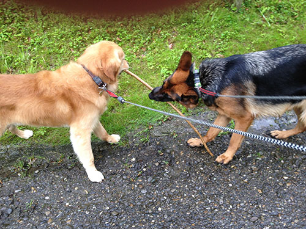

- Doris Keller
- Home
- About Me
- Experience
- Wings Lernmedien

About
Me And My Life
Me And My Life
My family. They bring action to my life and keep my emotions running! I have a husband - we're not married, but together since almost thirty years, so I see him as my husband. We have a 26 year old daugther together. She lives with her boyfriend. But when she needs somebody, we're always the ancor and she's ours.
Our dogs. They keep me sain and - almost - fit. Mailo, our Golden Retriever, is eleven years old, and he isn't the fastest anymore. He doesn't like to be alone anymore and begins to bark after a while. Our other dog is a six years old German Sheppard named Kira. At home she's like a toy - you can do about anything with her, she's always happy and shows it. Outside she's the fierce gard-dog and barks at all the other dogs.
I wish that the next several years will be better - we had a few hard knocks the past ten years. I hope that my ninty year old parents will still living a long time. I wish that next year we will be able to take at least a two weeks holiday, away from home. And, naturaly, I wish to finaly make something with my skills learned with Treehouse!
I have a lot of hobbies. Some of them are: